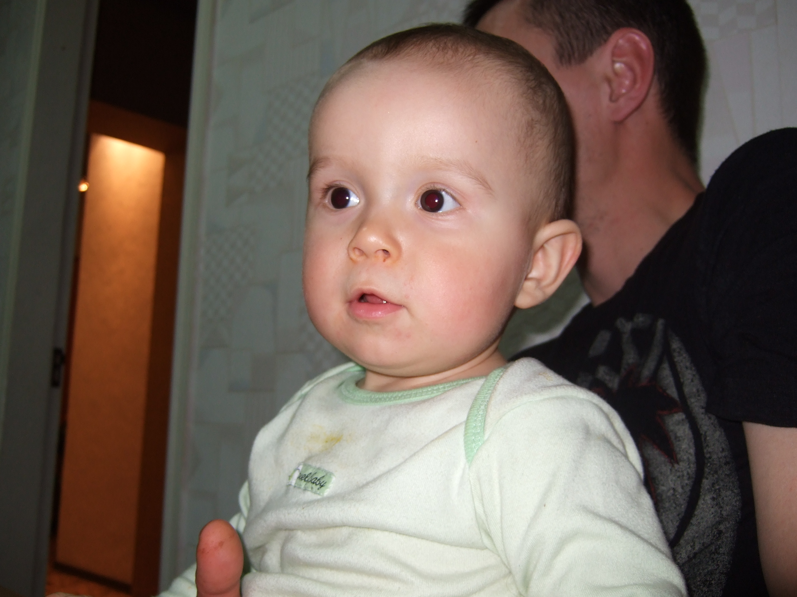
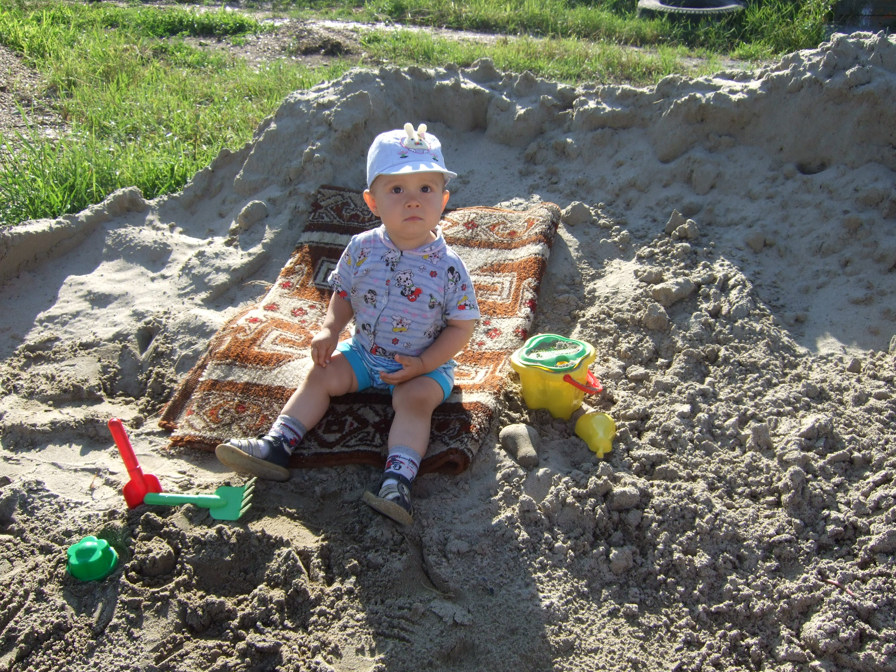
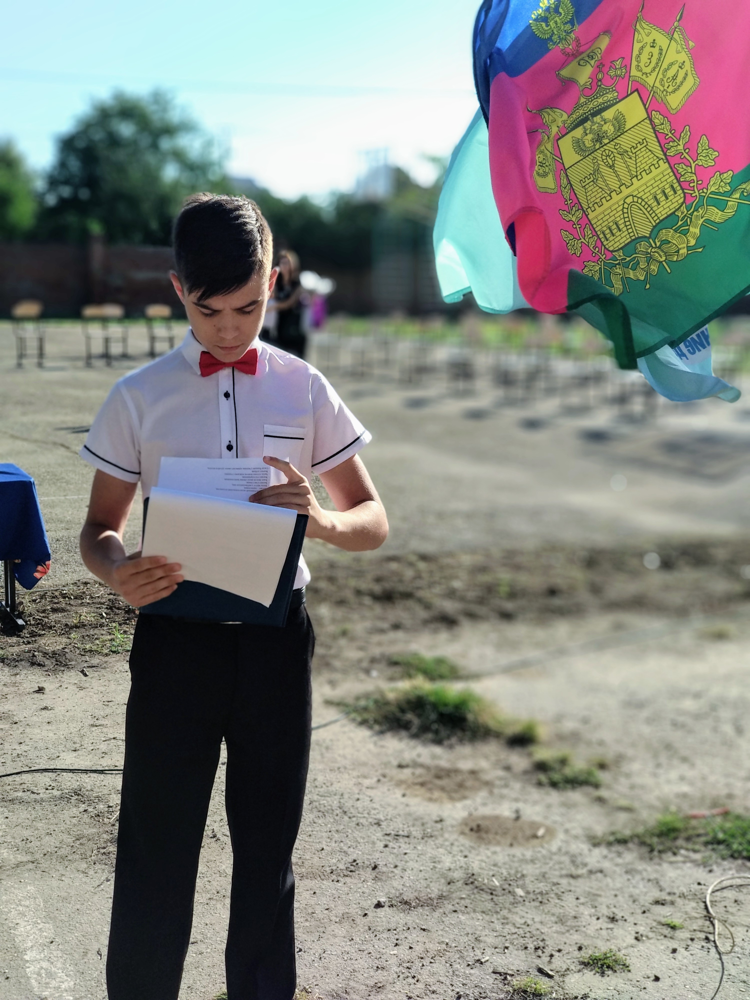
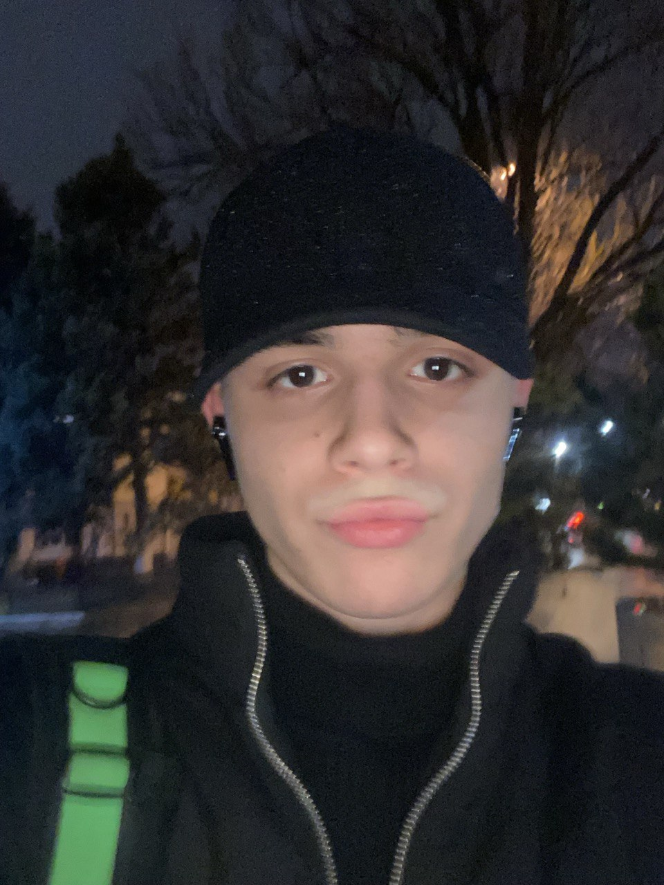
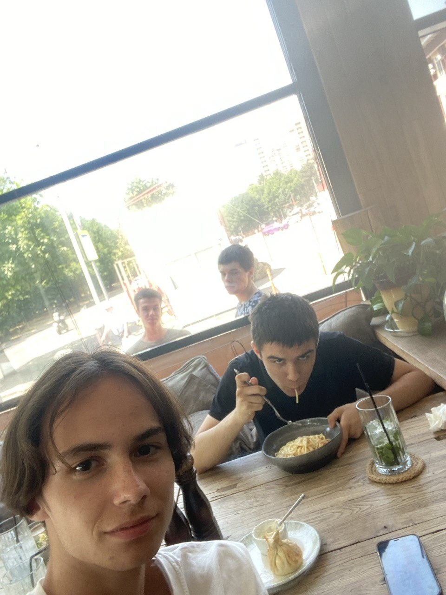

Привет, я Устин — студент 3 курса по программированию


Пару слов туда-сюда
Хожу в техникум, потом в зал, саморазвиваюсь, временами работаю. Изредка встречаюсь с друзьями из
темного прошлого (Динская). У меня есть ряд качеств, которые являются частью моей неотразимости:
1. Доброта - я умею проявлять заботу и доброту по отношению к другим и готов прийти на помощь.
2. Умение слушать - я умею слушать и поддерживать людей в трудные времена.
3. Творческий подход - у меня необычный подход к делу (когда я это захочу), интересные идеи и креативное
мышление.
4. Стремление к развитию - я постоянно работаю над собой и стремишься стать лучше.
5. Чувство юмора - у меня неотразимое чувство юмора (когда я не стесняюсь), умение находить радость в жизни и
делиться ею с другими.
6. Ну и как вы поняли - скромность.

Интересные факты
Санкт-Петербург
После окончания 9 класса поступил в Питер, получалось учиться, замечательный город,
пришлось
вернуться по семейным обстоятельствам. Однако основную цель переезда я выполнил - выжить и завести полезные
знакомства в незнакомом городе.
Профессия программиста
Вообще не интересовался данной профессией.
Школа
В школе был отличником, принимал участие везде. Меня все знали, вел линейки, большинство
оценок ставили даже не смотря мне в лицо, так как знали что я Устин Варта.
Отношение к жизни
Каждый раз оказываясь не в своей тарелке, можно вырулить путем хитрости, это моя самая
развитая
черта.


Хобби
Покер
Люблю смешивать психологию людей, деньги и игру, нравится не сам момент выигрыша, а
момент прочитывания соперника.
Шахматы
Тут не о чем говорить, профессионально занимался шахматами с 5 лет, бросил в 12 и до
сих
пор мне нравится играть.
Бильярд
Совсем недавно открыл для себя данный вид спорта. Особенно весь его кайф раскрывается
при встрече с друзьями, и желательно чтобы рядом баня была.
Картинг
Мне нравится скорость, высокая скорость, может однажды сяду за руль болида формулы 1,
но
пока довольствуюсь только картингом и то не часто, дорогое удовольствие.

Мое будущее
Деньги
Не знаю, что по поводу профессии, так как особо ничего не привлекает, но без денег я
точно не останусь.
Чтение
Начать читать гораздо полезной информации, больше чем есть сейчас.
Хотелки
Выполнить все свои мечты, и купить все вещи, которые однажды пообещал себе в детстве и
записал в блокнотик.
